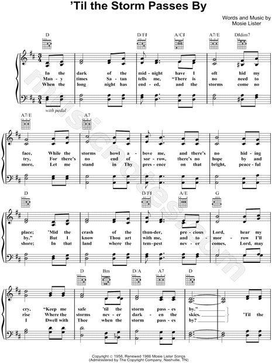

|
¡@ |
¡@ |
|
¡@ºqµü |
¡@ |
|
¡@  |
|
|
¡@ |
¡@ |

|
¡@ |
¡@ |
|
¡@ºqµü |
¡@ |
|
¡@  |
|
|
¡@ |
¡@ |

¡@
¡@
| Text: | 'Til the Storm Passes By |
| Author: | Mosie Lister |
| Tune: | LISTER |
| Composer: | Mosie Lister |
| Short Name: | Mosie Lister |
| Full Name: | Lister, Mosie, 1921- |
| Birth Year: | 1921 |
| Death Year: | 2015 |
|
Mosie Lister
|
|
|---|---|
| Born |
September 8, 1921 Cochran, Georgia, U.S. |
| Died |
February 12, 2015 (aged 93) Spring Hill, Tennessee, U.S. |
| Genres | Gospel |
| Occupation(s) | Songwriter, singer, arranger, reverend |
| Instruments | Piano, guitar, violin |
| Years active | 1946¡V2015 |
| Associated acts | Elvis Presley, George Beverly Shea, Cathedral Quartet, The Statesmen Quartet, Bill Gaither |
| Website |
mosielister |
Thomas Mosie Lister (September 8, 1921 ¡V February 12, 2015) was an American singer and Baptist minister. He was best known for writing the Gospel songs "Where No One Stands Alone", "Till the Storm Passes By", "Then I Met the Master" and "How Long Has It Been?" As a singer, he was an original member in The Statesmen Quartet, the Sunny South Quartet, and the Melody Masters. In 1976 Lister was inducted into the Gospel Music Hall of Fame and the Southern Gospel Music Association in 1997. His songs have been recorded by nearly every Southern Gospel artist.[1]
Thomas Mosie Lister was born in Cochran, Georgia, to Willis and Pearl Lister who were both musical and attempted to teach their son music at an early age on their farm in the Empire District of Dodge County.[2] They placed the young Lister in the church choir, but soon discovered that he could not distinguish musical tones.[3] It wasn't until he began studying the violin that his ear training abilities began to improve and by the time he was a teenager he was already studying harmony and composition. He studied music at the Vaughan School of Music in Tennessee in 1939.[4]
Lister joined the Navy in World War II. At the end of his tour, he enrolled in Middle Georgia College where he continued to study harmony, counterpoint, arranging, piano and organ. In 1946 he met Wylene Whitten. They married that same year, moved to Atlanta, and in 1949 gave birth to identical twin daughters. After three decades as a Gospel singer, songwriter, and arranger, Lister, became an ordained Baptist minister.[2] He was also an ordained deacon at the Riverside Baptist Church of Tampa.[3] Following the death of Wylene in 2001, he married Martha Jean Hunter April 7, 2002.
Lister's first professional singing employment was as a member with the Sunny South Quartet, which also included Jim "Big Chief" Wetherington; whom he left with to form the Melody Masters Quartet.[2] In 1948, Hovie Lister (no relation) invited him to be the original lead singer for the Statesmen Quartet.[5] Shortly thereafter, he retired from professional singing and devoted his attention to writing, and in 1953 he formed the Mosie Lister Publishing Company which later merged into Lillenas Publishing Company of Kansas City, Missouri in October 1969.[3][4]
As of 2014, Lister's songs catalog over 700 in numbers, with thousands more in arrangements. His music has been recorded by some of the greatest Southern Gospel Quartets including the Statesmen Quartet, Cathedral Quartet, the Blackwoods, the Blue Ridge Quartet, the Jordanaires, and the LeFevres. Legendary solo artists have also recorded his songs such as George Beverly Shea, Porter Wagoner, Bill Gaither, Merle Haggard, Loretta Lynn, and Elvis Presley, who recorded three of Lister's songs in the 1960s: "Where No One Stands Alone" "He Knows Just What I Need" and "His Hand in Mine".[2]
Lister was inducted into the Gospel Music Hall Of Fame in 1976 and into the Southern Gospel Music Association Hall Of Fame in 1997. The Dove Brothers released a project titled A Tribute To Mosie Lister in 2004, which Lister also produced.[4] He died on February 12, 2015, aged 93.[6][7]
| Year | Association | Result |
| 1976 | Gospel Music Hall of Fame | Inducted |
| 1997 | Southern Gospel Music Association | Inducted |
¡@